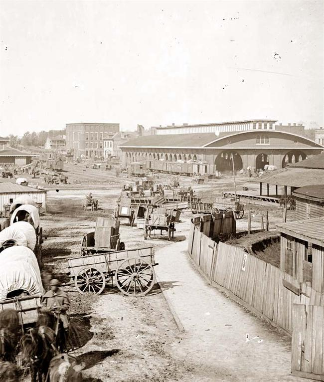
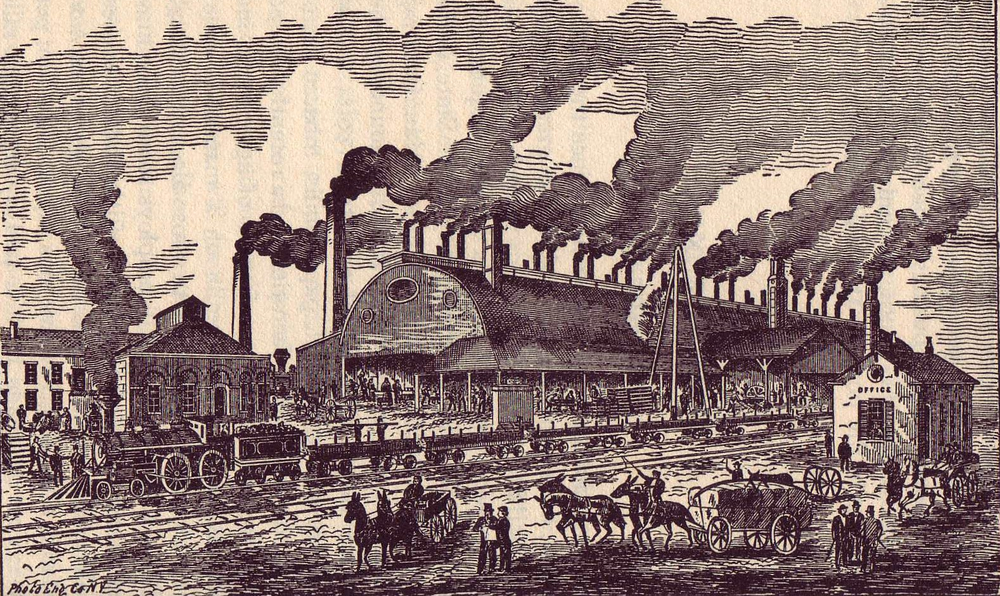
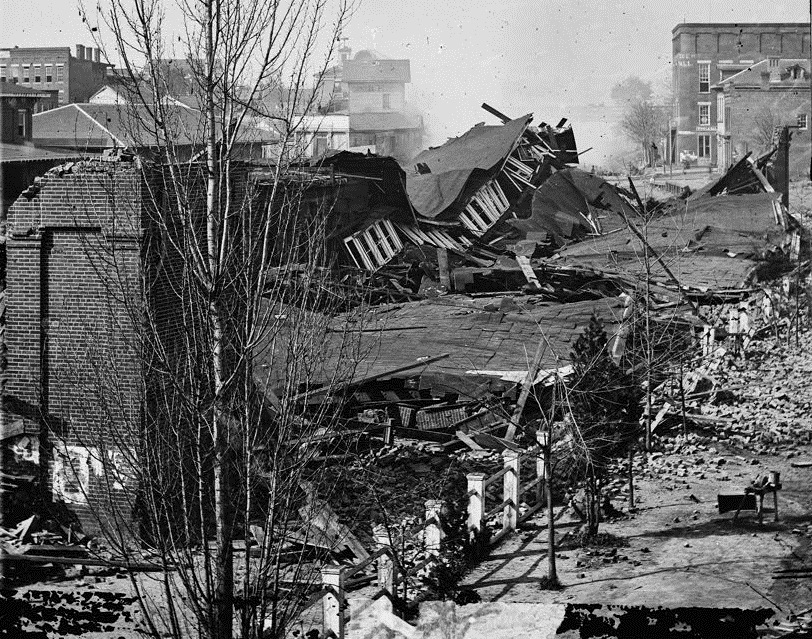

|
Atlanta, located on a site that once housed an American Indian village called 'Standing
Peachtree,' is an inland city with limited access to water. As such, the founding and
settlement of the city in the 1840s was only possible after Indian removal and the
construction of railroads. By the time of the Civil War, the quick-growing city had
emerged as one of the South's major rail hubs and industrial centers.
In 1825, the state of Georgia formed a Board of Public Works, which was charged with
planning internal improvements--canals, roads, and railroads. Wilson Lumpkin, a future
U.S. Representative and Georgia governor, surveyed the state's northern region for the
|

Atlanta in the 1840s, just as it was growing into
an important city
|
Board in 1826. He noted the area's particular suitability for rail transportation, and the
following year introduced a resolution calling for the Cherokees' removal from Georgia. By
1833, Indian lands were being distributed via public lottery, despite the fact that the
land was not officially surrendered until the Treaty of New Echota was signed in 1835. In
1838, the government forced the Cherokees' removal to Indian Territory via the infamous
"Trail of Tears," fully opening northern Georgia to white settlement and development.
In the 1830s, Georgia's cities wrangled over railroad placement. Savannah, Georgia, was
in competition with Charleston, South Carolina, to be the premier port city of the South,
and various other river cities in Georgia--Macon and Augusta, in particular--were also
trying to profit from rail trade. The Panic of 1837 and ensuing depression slowed
construction, but by the 1850s a rail network connecting Macon, Savannah, Augusta, and
Ross's Landing in Chattanooga, Tennessee was in place. In 1857, an additional line, the
Memphis and Charleston, connected this web to the Mississippi River. These railroads
carried cotton to seaports and distant urban markets. They joined at a nondescript point
in the North Georgia piedmont that was initially called "Terminus." For some, like Western
& Atlantic chief engineer Stephen H. Long, the site appeared good for little more than a
few shops and taverns. Others, though, saw potential. As early as 1843, Congressman and
future Confederate Vice-President Alexander H. Stephens expressed confidence that a great
city would grow there.
Early settlers of Terminus plotted out streets parallel to the railroad tracks,
resulting in a downtown patchwork of grids intersecting at odd angles. The town was
christened 'Marthasville' in 1843, after the daughter of then-Governor Lumpkin. Some
residents felt that such a name was too folksy, however, and did not befit the important
city they planned to build. In 1845, the Chief Engineer of the Georgia Railroad suggested
'Atlantica-Pacifica,' a reference to the Atlantic-Pacific Railroad, which owned the tracks
that ran through Marthasville. The new name was quickly embraced, though when the town was
officially incorporated in 1847, it was shortened to 'Atlanta.'
By 1850, Atlanta had two hotels--Washington Hall and the Atlanta Hotel--and two
newspapers--the Luminary and the Enterprise. These publications were
essential for encouraging the city's booster mentality, commonly known as the "Atlanta
Spirit." This spirit was responsible for attracting investment, commerce, and political
clout. In 1854, Atlanta became seat of the newly formed Fulton County. Residents also
lobbied to move the state capital from Milledgeville, a shift that finally occurred in
1868.
Atlanta's merchants and businessmen focused on commercial trade, rather than the trade
in cotton. This was in distinct contrast to older cities like Macon and Augusta, which
bordered the plantation districts of Georgia's coastal plain. As a result, Atlanta grew
rapidly. Little more than an outpost in 1845, by 1860 Atlanta had nearly 10,000
|

The Atlanta Rolling Mill
|
inhabitants and conducted over $3 million worth of trade. Though it was not a center of
cotton production, the city was nonetheless highly dependent on slavery. Two slave markets
were located downtown, and in 1860 almost 20 percent of the city's population was
enslaved. Fearing insurrection, white Atlantans enacted strict slave codes in the 1850s;
the city's small handful of free blacks also had to follow these laws.
Given its status as a commercial center, many of Atlanta's early leaders belonged to
the merchant class. For example, dry goods store owner Jonathan Norcross was elected mayor
in 1851. He created a volunteer police force to suppress prostitution and cockfighting.
The 1850s also saw the establishment of the city's first major burial ground--Oakland
Cemetery--and a theater, the Atlanta Athenaeum. By the late 1850s, the city was also
developing into an industrial center. The Atlanta Rolling Mill opened in 1857, and it soon
had the second largest capacity of any steel mill in the South, after Richmond's Tredegar
Iron Works.
During the late 1850s, in contrast to their neighbors throughout much of the Deep
South, Atlantans did not favor secession as a solution to the slavery issue. The city's
residents did not want to disrupt industry and commerce, and so overwhelmingly supported
Unionist candidate John Bell in the presidential election of 1860. Abraham Lincoln's
election changed many minds, however, and several prominent Atlantans were present when
Georgia voted to leave the Union.
Throughout the Civil War, Atlanta continued to grow, serving as one of the
Confederacy's most important manufacturing and trading centers. Judged to be relatively
safe from invading Union armies, the city was used to store large quantities of
ammunition, clothing, food, and other supplies for Confederate armies operating in the
Western Theater. The Atlanta Rolling Mill produced ironclad ships for the Confederacy as
well as railroad tracks. The substantial labor demands imposed by these activities caused
the population of Atlanta to grow from 10,000 to nearly 22,000.
By the end of 1863, it was clear that the Confederacy's leaders had incorrectly
assessed the tactical situation, and that Atlanta was indeed a possible target for Union
armies. Confederate Chief of Engineers Jeremy F. Gilmer asked Atlanta businessman Lemuel
P. Grant to assess the terrain around the city and to provide a plan for its protection.
Grant reported back with unhappy news, namely that for the exact same reason that Atlanta
became a hub of commerce--it was easily accessible from all directions--it was also nearly
impossible to defend against invaders. He nonetheless undertook to build a series of 17
small fortresses around the perimeter of the city, connected by trenches, earthworks, and
other obstructions. Gilmer personally inspected the project in December 1863 and lauded
Grant's efforts. Both men recognized, however, that the defenses were almost certainly
inadequate.
In the middle of 1864, Union Maj. Gen. William T. Sherman did indeed turn his attention
|

Atlanta's main train depot, after it was destroyed
by Sherman's troops
|
to Atlanta. Troops under his command fought a series of pitched engagements on land that
is now part of the city--the Battle of Peachtree Creek, the Battle of Atlanta and the
Battle of Ezra Church. On September 1, Confederate Gen. John Bell Hood ordered the city
evacuated and its public buildings and military assets destroyed--a scene memorialized in
the 1939 film Gone With the Wind. The next day, Sherman's troops entered Atlanta
and received its surrender from Mayor James Calhoun. "Atlanta is ours, and fairly won,"
the general advised President Lincoln. The defensive works constructed under Lemuel
Grant's direction had virtually no impact on Sherman's advance.
The fall of Atlanta was close to a mortal blow for the Confederacy. Lincoln's
reelection had been in doubt, but with the city in Union hands, a second term was
essentially guaranteed. Northern morale and support for the war effort surged, especially
once the fall of the cities of Mobile, Savannah, Petersburg, and Richmond followed shortly
thereafter. The loss of manpower and materiel that went with the fall of Atlanta were also
crucial; thereafter, the Confederacy's western armies were never again able to mount a
viable defense against the onslaught of Sherman's armies.
Though Sherman eventually departed Atlanta to launch his "March to the Sea," the city
remained occupied for the rest of the Civil War and well into the Reconstruction Era. In
the 1870s and 1880s, the city rebuilt and re-emerged as a hub of Southern commerce and
industry--a prominent symbol of the "New South."
Source: Christopher Bates for the History 139A website.
|